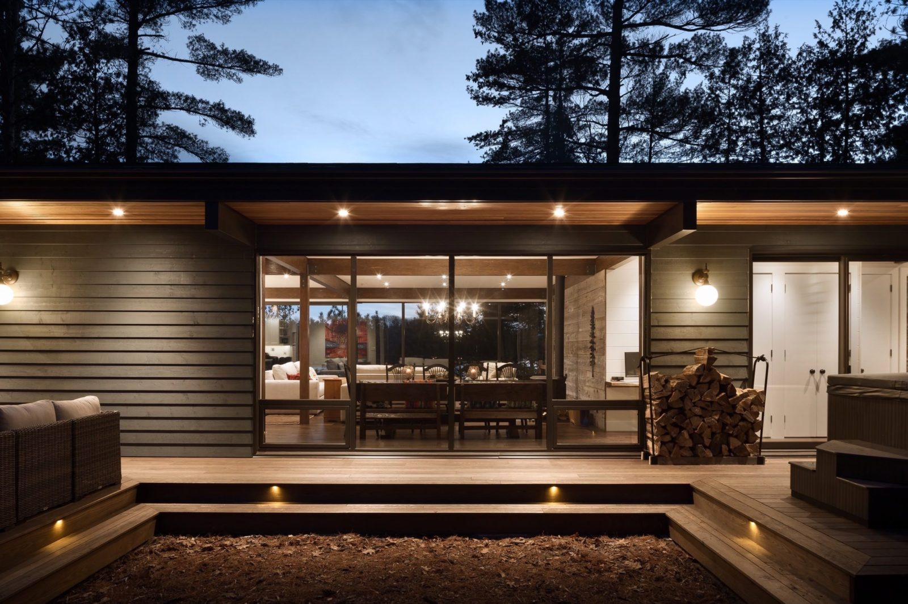

Meisner
North Kawartha, Ontario, Canada | 1616 sqft

Replacing a three season cottage that has been in the family for generations, this MAFCOhouse is a four season home with extensive views from almost every side. The living space and master bedroom share the sheer glass lake elevation, while a large bank of windows to the rear provides views and transparency through the cottage.

Large roof overhangs and big decks to front and rear connect with the landscape and encourage outdoor living. Guest bedrooms are located in a separate wing, connected via a corridor incorporating an office space in this compact MAFCO design.
